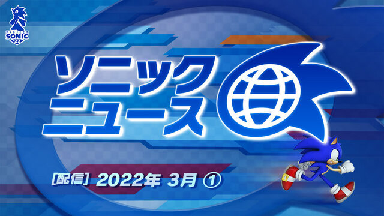

 ソニックニュース 2022年3月① SNS動画・配信ソニックニュース 2022/03/19 ソニさんぽ 第二回 編集後記 SNS動画・配信ソニさんぽ 2022/02/28 音速赤ちょうちん ～ソニックチームほろ酔い談議～ 第一夜 SNS動画・配信音速赤ちょうちん 2022/02/09 ソニックニュース 2022年2月① SNS動画・配信ソニックニュース 2022/02/04 ソニさんぽ 第一回 編集後記 SNS動画・配信ソニさんぽ 2022/01/31